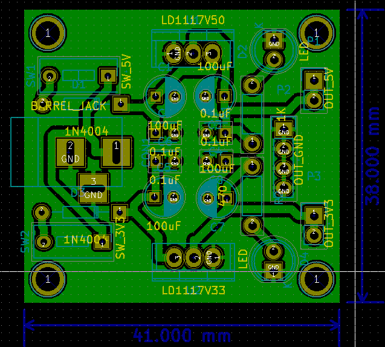

This is my version of a dual power supply for arduino and the nRF24L01+ transceiver module.
I have read that the nRF24L01 transceiver module may behave erratically if its power supply (3.3V) is not stable. I also have a base module for it, but I plan to only use the base module during the initial testing.
If and when I use these transceiver, I would prefer minimize the number of components.
Hopefully, I can fabricate the PCB these following nights.
Most of my circuits would be through-hole, as opposed to surface mount technology/devices (SMT or SMD).

Comments